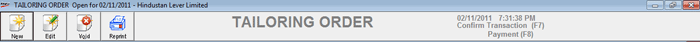

Service Orders, for example, order for tailoring, are prepared prior to billing by the service staff. The details of service orders are recorded using this option. During billing, you can recall the service orders that are already recorded.
The Service Order/Tailoring Order in the main menu leads to a composite window that allows various operations related to a Service Order.
How to reach: Sales > Service Order
The service order window is displayed.

New: To generate a new service order
Edit: To edit a service order
Void: To delete or cancel previously generated service order
Reprint: To reprint a service order document